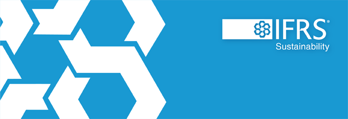
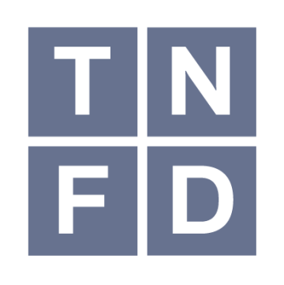
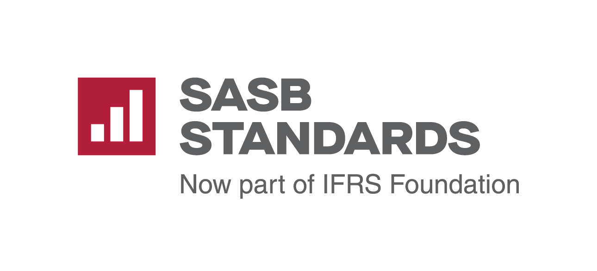
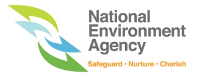
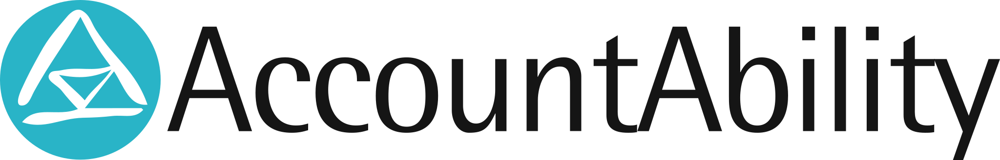
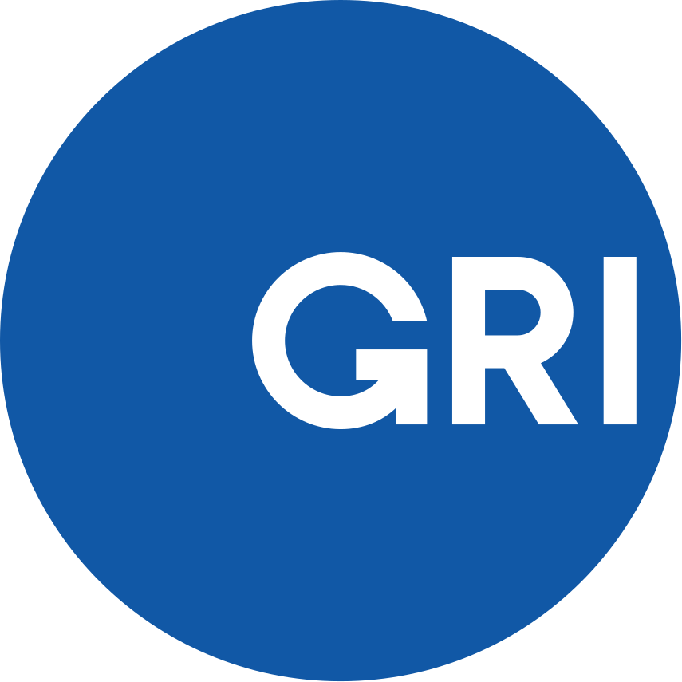

ISSB / IFRS S1 S2Sustainability and climate-related disclosure requirementsStandards Directory
Criteria, audit standards and reporting references
A clear map of the standards used to define verification, audit, assurance, reporting and training assignments.
Reference Map
Organizations and frameworks
Official marks identify the source organization or framework. The role of each item is stated below its mark.

TNFDNature-related risk and disclosure framework
SASBIndustry-based sustainability disclosure topics
Singapore CPACarbon Pricing Act reporting and verification pathway
AA1000 / AccountAbilityStakeholder, materiality and assurance principles
GRIImpact reporting and sustainability topic referencesISO14064 · 14067
14068-1
ISO 14064 / 14067 / 14068GHG, PCF and carbon-neutrality verification references14068-1
ISO14001 · 45001
50001
ISO 14001 / 45001 / 50001Environmental, safety and energy management-system audit references50001
IWA42 · 48
IWA 42 / IWA 48Net-zero and climate-action implementation guidanceOrganization marks identify their issuing bodies. Where trademark reuse is restricted, standards are shown by their complete reference rather than by a recreated logo.
Assignment Criteria
How each standard is used
Standards are assigned a specific role in the proposal, contract and report. A reporting framework is not treated as a certification standard, and guidance is not treated as verification criteria.
Engagement criteria
ISO 14064-1 / ISO 14064-3 · ISO 14067 / ISO 14040 / ISO 14044 · ISO 14068-1
Used for organizational GHG, project reductions, product carbon footprints, LCA and carbon-neutrality verification or validation assignments.
Audit standards
ISO 14001 · ISO 45001 · ISO 50001
Used as agreed criteria for environmental, occupational health and safety, and energy management-system audits.
Assurance standards
ISAE 3000 (Revised) · ISSA 5000 · AA1000AS
Used for applicable non-financial and sustainability assurance engagements, subject to jurisdiction and effective-date requirements.
Disclosure references
IFRS S1 / S2 · SASB · GRI · CDP · TNFD · GHG Protocol
Used as reporting, disclosure or accounting references when required by the client mandate or reporting programme.
Programme rules
Singapore CPA · EDB REG(E) · VCS / Verra · Gold Standard
Programme-specific rules, eligibility conditions, methodologies and authorization pathways.
Guidance / training
IWA 42 · IWA 48 · PAS 2060 transition context
Used for learning, pathway design and historical context; not presented as certifiable standards.